Top Things to See, Do & Eat in Arab Street!
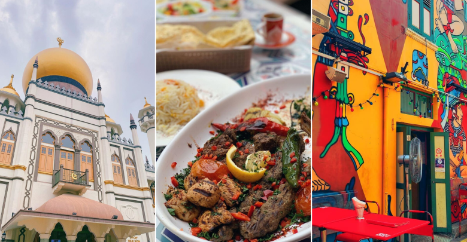 Chances are if you’ve searched up places to visit around Singapore, you’ve probably come across Arab Street.
It’s located in the Kampong Glam area.
This area is filled with endless corners to explore and experience. Here’s an ultimate guide to Arab Street for you!
Things to See in Arab Street:
1) Masjid Sultan Mosque
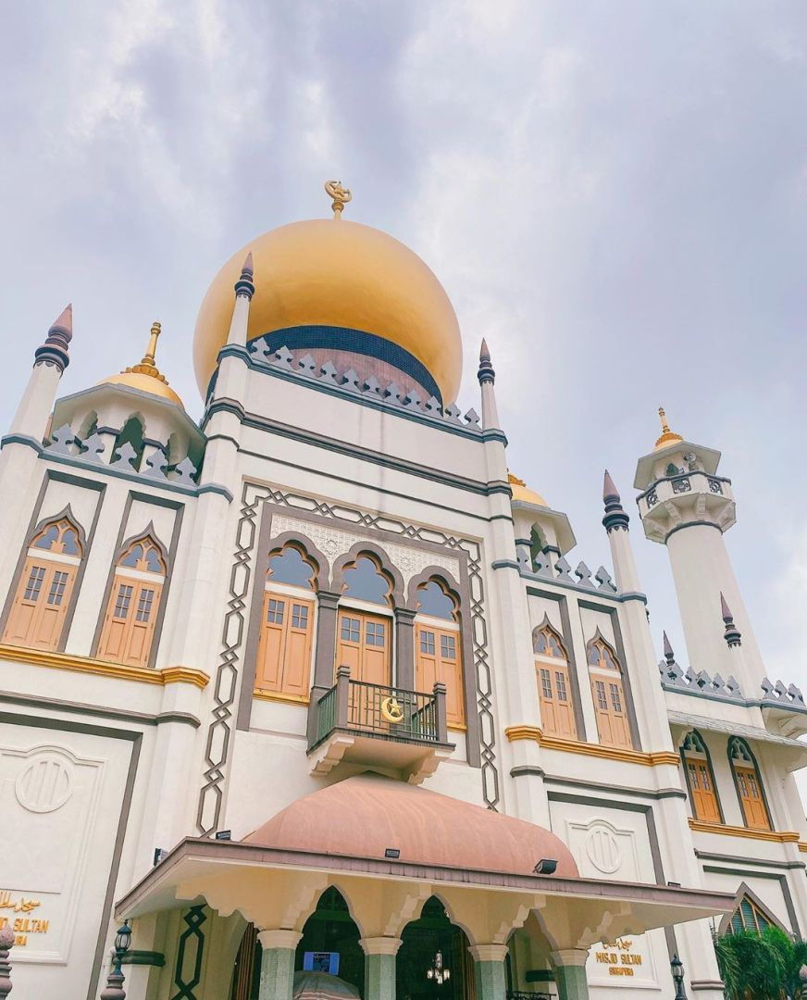 Take some time to appreciate the rich culture and beautiful architecture of the Masjid Sultan Mosque! The national monument is another perfect location for aesthetic shots.
It is also one of the most visited tourist attractions in Singapore!
In addition, the mosque serves as a focal point for Singapore’s Muslim community.
Pay it a visit to learn more about the culture. While you’re there, take a quick tour inside to personally experience the environment in this grand mosque.
Masjid Sultan Mosque, 3 Muscat St, Singapore 198833
2) Malay Heritage Centre
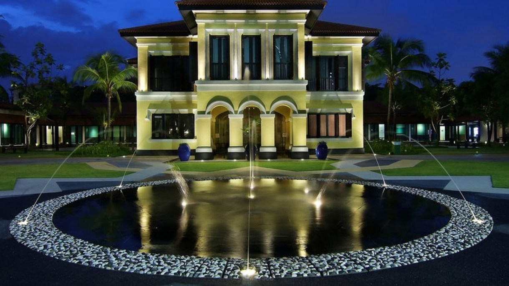 Just down the road from Sultan Masjid Mosque, the Malay Heritage Centre is filled with artefacts and exhibits for visitors.
It’s all related to the history of Malays in Singapore
This place is great to learn more about the Malay society in Singapore and the development of the surrounding Kampong Glam area.
Malay Heritage Centre, 85 Sultan Gate, Singapore 198501
3) Artsy Wall Murals
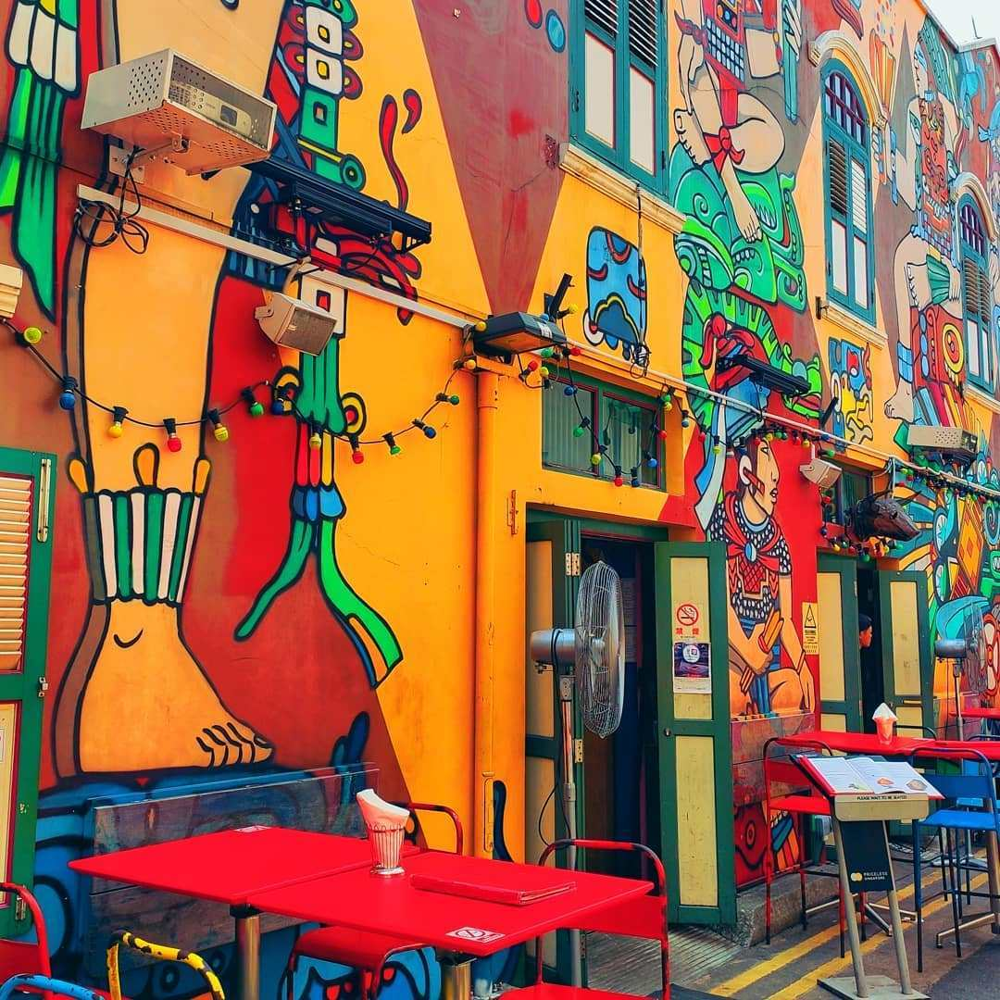 Spruce up your Instagram feed with the vibrant wall murals around Haji Lane!
With the colourful paintings covering nearly every surface in the busy area, you’ll definitely need some time to pick and snapshots of your favourite ones!
It can get very crowded with eager tourists hoping to boost their Instagram aesthetic, so make sure to go early if you want to avoid getting photobombed!
Things to Do in Arab Street:
1) Fabric shopping
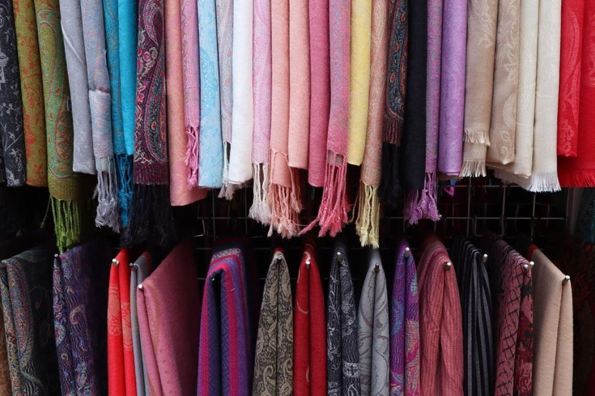 Famous for the saturation of fabric merchants in this quaint street, Arab Street is the go-to location for an endless selection of quality fabrics.
From traditional Asian fabrics to Middle Eastern-inspired designs, inspiration is sure to strike wherever you go.
Take a quick stroll and check out what Arab Street’s fabric-selling scene has to offer!
2) Gentleman Haircut
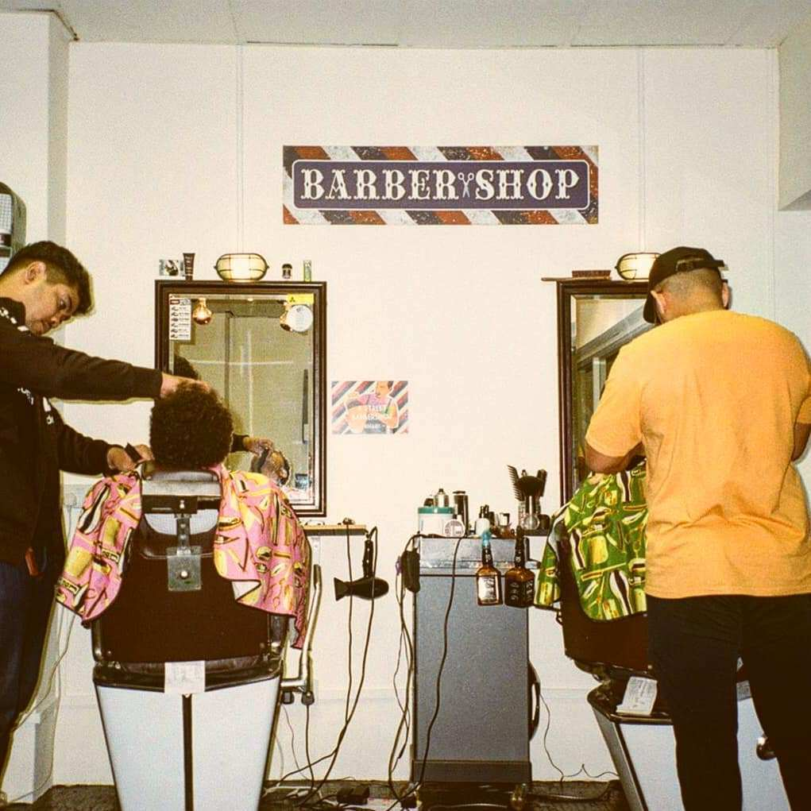 The ‘A’ Street Barber Shop offers fresh cuts for all men (and boys) to transform into dapper gentlemen.
Expect top-notch service and ambience in the colourfully-decorated salon interior.
The ‘A’ Street Barber Shop, 200, #02-25 Jln Sultan, Textile Centre, Singapore 199018
3) Aromatics Perfume
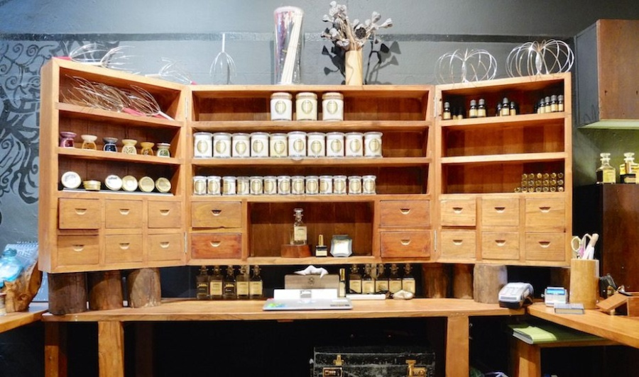 Walk by this small indie studio and you’ll find your curious nose guiding you into it.
The niche perfumery explores the world of scent, offering small batches of refreshing fragrances and custom aromatics.
Take your time to discover its curated selection of in-house perfumes, as well as wooden soy candles, infused balms and aromatic jewellery.
Sifr Aromatics, 42 Arab Street, Singapore 19974
Things to Eat in Arab Street:
1) Fika Swedish Cafe and Bistro
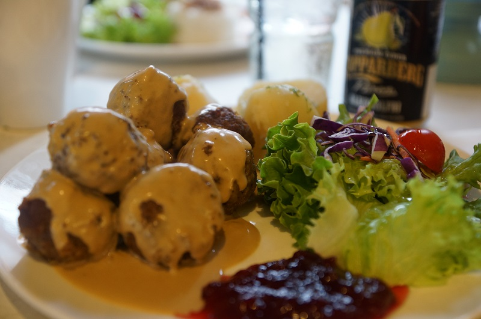 Need a Swedish meatball fix? Give Ikea a pass and head over to the end of Arab Street for Fika.
Here, you’ll find a small but serviceable menu of Swedish classics like Toast Skagen, Pytt i Panna and Tunnbrödsrulle.
With its whitewashed walls and light-filled interiors, the homey cafe is a breath of fresh air amidst the many Mediterranean eateries within the area.
Don’t leave before trying the much raved about lingonberry cheesecake!
Fika Swedish Cafe and Bistro, 257 Beach Road, Singapore 199539
2) Krave
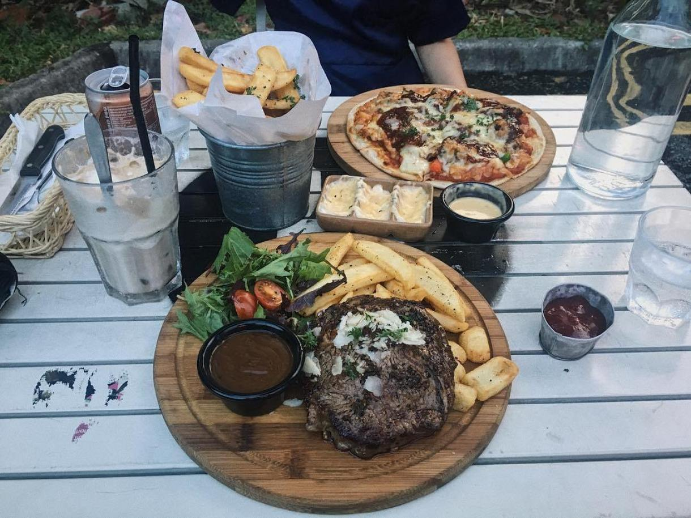 If you’re looking for something unique, Krave serves up interesting fusion foods like Laksa Pasta and Chempedak Crème Brulee.
Coupled with the unique concept, the food is delicious and well-made!
They serve the usual cafe munches like truffle fries and chicken drumlets as well, so it’s a good place to visit for a mid-day snack!
Krave, 28 Bali Lane, Singapore 189864
3) Tabbouleh Lebanese Cafe and Restaurant
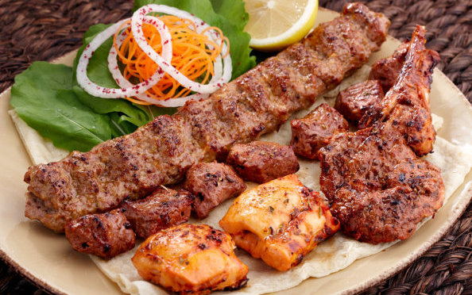 Decorated with mosaic lamps and red tablecloths, the Lebanese restaurant has a quaint and cosy vibe.
Its menu is packed with a list of Middle Eastern and Western fare, including lamb kafta with hummus, halloumi cheese sandwich, charcoal-grilled meats and more.
For sharing, get a mezze platter that’s served with creamy yoghurt and warm pita bread.
Tabbouleh Lebanese Cafe and Restaurant, 41 Arab Street, Singapore 199740
How To Get There:
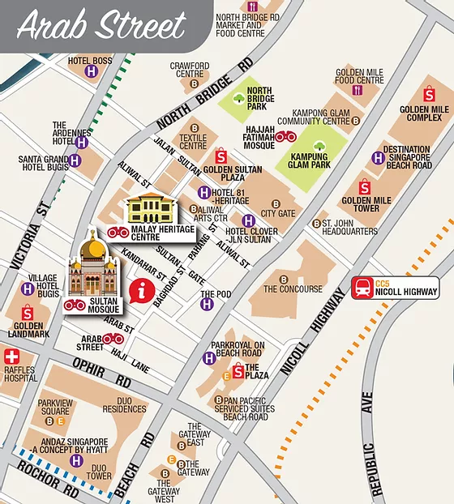 MRT: Bugis (East-West Line) & Nicoll Highway (Circle Line)